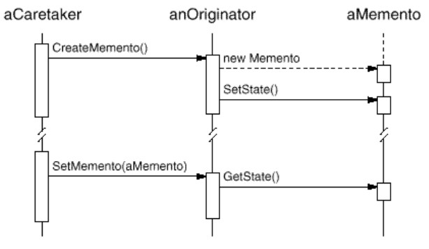
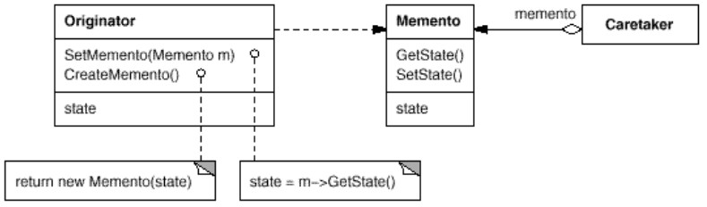

But : Sans violer l'encapsulation, isoler et externaliser une partie de l'état interne d'un objet, afin de pouvoir restaurer ultérieurement l'objet dans cet état.
Permet de fournir un "undo" ou un "rollback".
Ce pattern définit 3 rôles :
Permet de fournir un "undo" ou un "rollback".
- Originator : l'objet source, dont l'état interne doit être sauvegardé.
- Caretaker : sait pourquoi et quand l'originator a besoin d'être sauvegardé ou restauré.
-
Memento : Stocke l'état interne de l'originator.
Ecrit et lu par l'originator, piloté par le caretaker.
Seul l'originator peut stocker et lire de l'information dans le mémento ; le mémento est opaque aux autres objets
Le code client ne s'adresse pas directement au mémento, mais passe par le caretaker. 
Structure GOF
Exemple wikibook
(code dans exemples/patterns/memento/wikibooks)Exemple simplifié où le mécanisme du
Caretaker est géré dans main()
Exemple Vaisseau
(code dans exemples/patterns/memento/vaisseau)Exemple plus complet, implémentant un mécanisme d'undo.
- Une partie de l'état du vaisseau n'est pas sauvegardé (
pourcentFuel). - Le caretaker est séparé du code client.
Exercice : Faire le diagramme de séquence correspondant à
Main.main()
Implémentation du schéma GOF
public class Originator {
private String state;
// The class could also contain additional data that is not part of the
// state saved in the memento.
public void setState(String state) {
System.out.println("Originator: Setting state to " + state);
this.state = state;
}
public Memento saveToMemento() {
System.out.println("Originator: Saving to Memento.");
return new Memento(state);
}
public void restoreFromMemento(Memento memento) {
state = memento.getSavedState();
System.out.println("Originator: State after restoring from Memento: " + state);
}
public static class Memento {
private final String state;
private Memento(String stateToSave) {
state = stateToSave;
}
private String getSavedState() {
return state;
}
}
}
class Caretaker {
public static void main(String[] args) {
List<Originator.Memento> savedStates = new ArrayList<Originator.Memento>();
Originator originator = new Originator();
originator.setState("State1");
originator.setState("State2");
savedStates.add(originator.saveToMemento());
originator.setState("State3");
// We can request multiple mementos, and choose which one to roll back to.
savedStates.add(originator.saveToMemento());
originator.setState("State4");
originator.restoreFromMemento(savedStates.get(1));
}
}
Remarques
- Memento permet de stocker une partie de l'état interne de l'originator sans enfreindre l'encapsulation ; isole les autres objets de la mécanique interne de l'originator.
- Ce pattern permet de garder le code pour gérer le stockage et la restauration hors de l'originator, évitant de l'alourdir (Single Responsability Principle).
-
Attention, Memento peut coûter cher, si de grosses quantités d'information doivent être stockées dans le memento.
Dans ce cas, il peut être possible de stocker dans le mémento non pas l'état de l'originator mais les transformations qui permettent d'arriver à cet état. -
Le mémento doit fournir 2 types d'interfaces :
- Une interface réduite pour le caretaker (typiquement un constructeur etgetSavedState()).
- Une interface plus large pour l'originator.
Peut être difficile à réaliser pour certains langages ; se fait avec les classes internes en java ; avec la notion defrienden C++. - Iterator peut utiliser un Memento pour capturer l'état d'une itération, en stockant le mémento en interne.